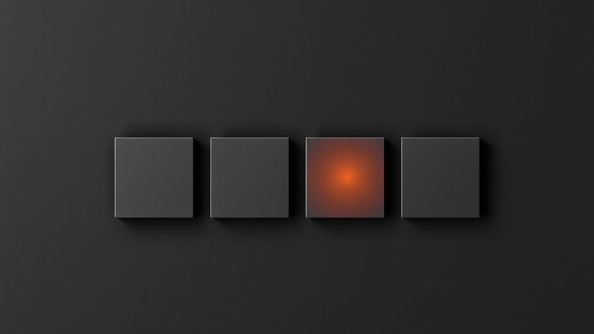
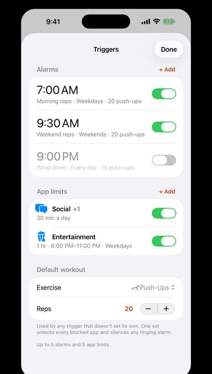

Rest Days for Bodyweight Training: How Many Do You Need?
How many rest days does bodyweight training need? A number for each kind of routine, sample weeks, what to do on rest days, and when to take an extra day off.


TL;DR
- Most people need one to three rest days a week; beginners should train every other day.
- The real rule: give each muscle about two days between hard sessions.
- Want to move daily? Alternate push and legs days, and keep easy days easy.
- The 2026 ACSM position stand: train each muscle group at least twice a week; going to failure isn't needed.
- On rest days, walk and sleep. Take an extra day when reps drop, form changes or joints hurt.
Day nine of your push-up streak. You get down on the floor and your arms feel like wet sand.
Nine days ago you could do 15. Today you're stuck at 9, and you're wondering whether taking tomorrow off is smart recovery or the start of quitting.
It's a fair question, and most answers online are written for people with barbells. So here's the version for push-ups, squats and planks in your living room.
Short answer: most people doing bodyweight training need one to three rest days a week. But the number of days matters less than this: the same muscle needs about two days between hard sessions. Easy practice can happen most days. Below is the number for each kind of routine, three weeks you can copy, and what a rest day should actually look like.
How many rest days for bodyweight training? Start here
Bodyweight doesn't mean easy. Twelve push-ups that leave you shaking take as much out of your chest and arms as a hard set at the gym, because what matters is how hard the set is for you, not where the resistance comes from.
So match your rest to how hard you train:
| How you train | Rest days a week | The rule |
|---|---|---|
| New to exercise, or back after a long break | 3–4 | Train every other day. Rest days are where the first gains show up. |
| Full-body sessions with hard sets (close to your max) | 2–4 | About 48 hours before working the same muscles hard again. |
| Split: upper body one day, legs the next | 1–2 | Each muscle still gets about two days off; you train on more days. |
| Small, easy daily practice (sets well short of your max) | 0–1 full days off, plus 1–2 easier days | Every set ends with several good reps left in you. |
That table is a conservative rule of thumb built from the research below, not a result from one study. If you're unsure which row you're in, use the row above it.
And if your plan has you training only twice a week, you already have five rest days. That's enough to get stronger: the latest guidelines ask for strength work on at least two days a week.
Rest the muscle, not the whole day
Here's the part most "how many rest days" answers skip. Recovery happens muscle by muscle. Sore legs don't stop you doing push-ups, and tired arms don't stop you squatting.
The two-day figure comes from lab studies of hard training. In one, ten trained men did squats and bench press either to failure or stopping halfway. The sessions taken to failure dragged their jump height and bar speed down for longer, while the sessions that stopped short recovered significantly faster within 24–48 hours. Small study, lifting rather than bodyweight, but the pattern is the useful part: harder sets need longer rest.

So if you want to move every day, alternate what you work:
- Push day: push-ups (wall, counter, knee or floor), plus a plank.
- Legs day: squats or chair sit-to-stands, plus a glute bridge or a wall sit.
- Easy day: a walk and a few minutes of gentle stretching.
Each muscle group gets about two days off, and you still did something every day. If you're doing one move daily, the same idea is in Squats Every Day and How Many Push-Ups a Day.
Do you need rest days for calisthenics, or is that just for lifters?
You need them for the same reason lifters do, just with a different dial. Two pieces of research are worth knowing.
Twice a week per muscle is the target. In 2026 the American College of Sports Medicine published a new position stand on strength training, pooling 137 systematic reviews covering more than 30,000 people. Its practical advice is plain: train all the major muscle groups on at least two days a week, and stay consistent. It also found that bodyweight and home routines produced real gains in strength and function.
You don't need to go to failure. The same stand found that pushing every set until you can't do another rep didn't consistently improve results for healthy adults. That's good news for rest days: sets that stop a couple of reps short recover faster, so you need fewer days off.
An older meta-analysis (Schoenfeld and colleagues, 2016) points the same way: working a muscle twice a week was linked to more growth than once a week. There wasn't enough data to say whether three or more times beats two.
Put together, the most useful bodyweight week isn't seven hard days. It's two or three proper sessions per muscle group, sets that end before your form breaks, and rest in between. For a full plan that progresses, see Bodyweight Strength Training at Home.
Three weeks you can copy
Pick the one that fits how much time you have. "Hard" means sets that feel like real work but end with one to three good reps left. "Easy" means about half of that.
| Day | Beginner (3 days) | Alternating (5–6 days) | Daily practice (7 days) |
|---|---|---|---|
| Mon | Full body | Push + plank | Easy sets, all moves |
| Tue | Rest or walk | Legs | Easy sets |
| Wed | Full body | Walk or rest | One harder set of each |
| Thu | Rest or walk | Push + plank | Easy sets |
| Fri | Full body | Legs | Easy sets |
| Sat | Rest or walk | Walk or easy full body | One harder set of each |
| Sun | Rest | Rest | Rest or walk |
Full body for a beginner: 2 sets each of an incline or knee push-up, a chair squat and a short plank (10–20 seconds). Easier versions: push-ups against a wall, sit-to-stands from a higher chair, a plank on your knees.
The daily-practice column is the grease the groove approach. It only works if the easy days really are easy.
What to do on a rest day
A rest day isn't a day on the couch, unless you need one. Light movement is usually the better choice.
- Walk. 20–30 minutes at a pace where you can still talk.
- Move gently. A few minutes of easy stretching, or slow bodyweight moves for muscles you didn't train yesterday.
- Sleep. Most recovery happens here. Adults 18–60 are advised to get at least seven hours a night.
Does active rest actually help? A 2018 meta-analysis in Frontiers in Physiology (Dupuy and colleagues, 99 studies) found that active recovery reduced muscle soreness, though the active-recovery groups were small (90 people in total). It did not significantly change how tired people felt. So a walk may take the edge off soreness. It won't make a hard week feel easy.
What a rest day isn't: a "light" hour-long session, or a set to failure because you felt good. If it leaves you tired, it wasn't rest.
Signs you need an extra rest day
The schedule is a guess. Your body is the data. Take an extra day off, or drop to the easiest version, when:
- Your reps go down two sessions in a row, like the 15 that became 9.
- You're so sore that your form changes: hips sagging in a push-up, heels lifting in a squat.
- You feel pain in a joint (wrist, shoulder, knee, lower back) rather than tired muscles.
- You've slept badly for a few nights, or you're ill.
- You're dreading it in a way that's new, not just "I don't feel like it."
Muscle burn during a set and mild soreness for a day or two are normal. Sharp pain, swelling, or pain that hangs around for days is not. Stop and get it checked.
Check with a doctor before starting if you have a heart condition or high blood pressure, a joint injury, are pregnant, or haven't exercised in a long time.
Questions people ask
Is it OK to do bodyweight exercises every day?
Yes, if most days are easy and you rotate muscles. Daily practice with sets well short of your max is fine for most healthy people. Daily max-effort sets on the same muscles are not: that's where reps stall and joints start to complain.
Does being sore mean I need a rest day?
Not always. Soreness after new exercise typically peaks one to three days later and fades as your body gets used to the move. Train a different muscle, or do an easier version of the sore one. If soreness changes how you move, rest it.
Will a rest day undo my progress?
No. Strength builds over weeks, not days, and a day or two off is part of how it builds. Losing a habit is a bigger risk than losing strength. That's why it helps to keep something small on the calendar every day, even if it's a walk.
Keep the habit, rest the muscle
Here's what tends to happen: you take a rest day, it turns into a rest week, and the phone fills the time the push-ups used to take.
Rep Rot locks the apps you lose hours to until you get up and move. When you hit a limit you set, those apps stay locked until you do a set of push-ups, squats, sit-ups, pull-ups or a plank, counted by your iPhone's camera right on the phone. Nothing is recorded.

To be honest about the fit: the lock asks for a set every time you hit the limit, rest day or not. So on rest days, set it to a move for the muscles you didn't train, or a short plank, and keep the set small. It counts reps; it doesn't check your form or know you're sore, so that call is still yours. Like any Screen Time limit, it can be worked around by someone determined.
Rep Rot has a free plan and a 7-day Pro trial. It's in testing now: email help@reprotapp.com for early access.
Sources: Currier BS et al., "Resistance Training Prescription for Muscle Function, Hypertrophy, and Physical Performance in Healthy Adults: An Overview of Reviews", ACSM position stand, Medicine & Science in Sports & Exercise (2026), and ACSM's summary; Schoenfeld BJ, Ogborn D, Krieger JW, "Effects of resistance training frequency on measures of muscle hypertrophy", Sports Medicine (2016); Morán-Navarro R et al., "Time course of recovery following resistance training leading or not to failure", European Journal of Applied Physiology (2017); Dupuy O et al., "An evidence-based approach for choosing post-exercise recovery techniques", Frontiers in Physiology (2018); Cheung K, Hume P, Maxwell L, "Delayed onset muscle soreness: treatment strategies and performance factors", Sports Medicine (2003); Physical Activity Guidelines for Americans, 2nd edition (2018); Liu Y et al., "Prevalence of healthy sleep duration among adults, United States, 2014", CDC MMWR (2016).